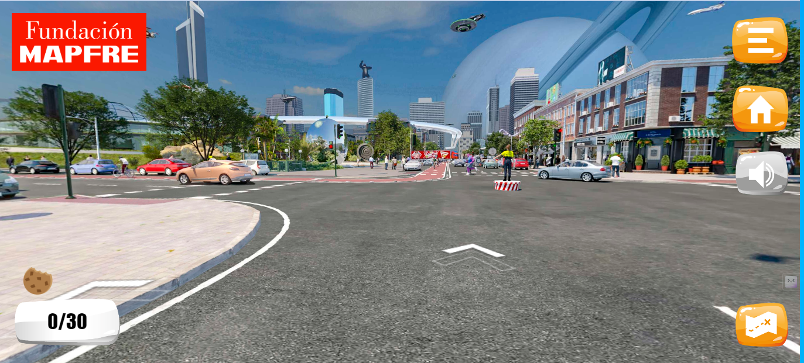

El proyecto transversal de riesgos y movilidad junto con el precto transversal TIC, presentan a la comunidad educativa el proyecto denominado Moralba Movilidad, que tiene la finalidad de fomentar una formación ciudadana para el reconocimiento de las normas de transito a traves de actividades educativas interactivas.
Conoce las partes de la vía.
Conoce las formas, colores e intenciones que tienen las diferentes señales de tránsito.
Organiza de forma correcta los elementos del mapa mental de las señales de tránsito.
La fundación MAPFRE nos ofrece la oportunidad de hacer un recorrido virtual como peatones.
Conduce el auto rojo acatando las normas de tránsito que hay sobre la vía.